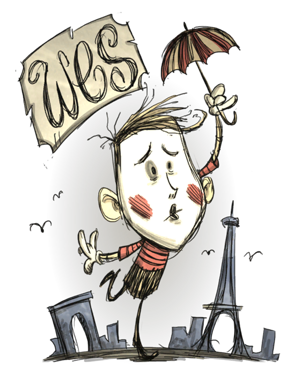

Has trouble staying alive
Practices balloonomancy
| Wes | |
|  |
|
| Nickname | The Silent |
| Motto | "..." |
| Perk | Can't talk Has trouble staying alive Practices balloonomancy |
| Sanity | 150 |
| Health | 113 |
| Hunger | 113 |
| Damage Multiplier | 0.75x |
| Hunger Multiplier | 1.25x |
| Special Item | |
| “ | ” | |
| –Wes | ||
Wes is the seventh unlockable Character. Wes has lower Sanity, lower Health, and lower Hunger that also drains faster compared to normal characters. As a mime he doesn't talk, instead, he will only do random pantomime moves, providing no real information whatsoever.
Wes is currently one of three characters that cannot be unlocked by gaining Experience, the others being Maxwell and Webber.
Wes' special power is that he starts with a Pile o' Balloons in his inventory. The Pile o' Balloons can be used to blow up a Balloon at the cost of 5 Sanity per balloon. It has unlimited uses.
When a balloon is attacked, it explodes doing 5 damage. Balloons can also trigger other balloons, so this can be used to do massive chain reactions. Balloons can also be used to distract Mobs and befriend Catcoons in the Reign of Giants DLC.
Wes in-game
In the third chapter of Adventure Mode, if the map is A Cold Reception, The King of Winter, The Game is Afoot, or Archipelago, a structure will appear, which will have two chambers with a Maxwell Statue in each one, and a third one with Wes on the middle.
When players break one of the statues, it will release Clockwork Bishops, Clockwork Knights and/or Clockwork Rooks. After breaking all the statues and defeating the Clockwork Monsters, go to the chamber where Wes is trapped. More Bishops, Knights and Rooks will spawn and the player will need to defeat them.
After all monsters are cleared, Wes will pass out, fall on the ground, and disappear. Wes is now unlocked as a playable character.
Wes cannot be set free if the player used a Console command to spawn him.
")
")
| Player Characters |
| Wilson quotes ⋅ clothes • Willow quotes ⋅ clothes • Wolfgang quotes ⋅ clothes • Wendy quotes ⋅ clothes • WX-78 quotes ⋅ clothes • Wickerbottom quotes ⋅ clothes • Woodie quotes ⋅ clothes • Wes quotes ⋅ clothes • Maxwell quotes ⋅ clothes • Wigfrid quotes ⋅ clothes • Webber quotes ⋅ clothes • Unimplemented |

{kind=link}
{kind=link}
{kind=link}
{kind=link}
{kind=link}
{kind=link}
{kind=link}
{kind=link}
{kind=link}